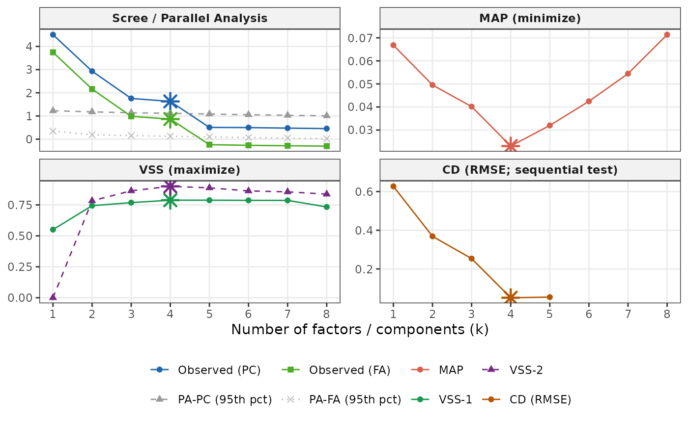

Runs complementary factor-retention criteria and reports their
recommendations. No single criterion is definitive; the goal is a consensus
range to inform your choice of k in ackwards().
Usage
suggest_k(
data,
k_max = NULL,
criteria = c("pa_pc", "pa_fa", "map", "vss", "cd"),
cor = "pearson",
n_obs = NULL,
n_iter = 20L,
seed = NULL,
...
)Arguments
- data
A data frame or numeric matrix (items in columns, observations in rows). Alternatively, a pre-computed correlation matrix may be supplied (a square, symmetric, numeric matrix with unit diagonal). When a correlation matrix is supplied,
n_obsis required (PA and VSS need N), thecorargument is ignored, and the Comparison Data (CD) criterion is skipped (CD requires raw item distributions for resampling).- k_max
Maximum number of factors/components to evaluate when recommending a depth – not a depth itself. Defaults to
min(ncol(data) - 1, 8). Increase if you expect a deeper hierarchy. (Note: this is a distinct meaning fromackwards()'sk_max, which is the extraction depth; the two share a name because they're the same dial in thesuggest_k() -> ackwards()workflow, just applied at different stages.)- criteria
Character vector of criteria to compute. Any subset of
c("pa_pc", "pa_fa", "map", "vss", "cd"); default is all five."pa_pc"and"pa_fa"share one parallel-analysis call (both or neither are fast);"map"and"vss"share one VSS call. Criteria not requested are skipped entirely (no computation) and theirk_*fields in the result areNA."vss"selects both VSS-1 and VSS-2 as a unit.- cor
Correlation basis:
"pearson"(default) or"spearman". Should match thecorargument you plan to use inackwards(). Ignored whendatais a correlation matrix (the basis is already fixed).- n_obs
Number of observations. Required when
datais a pre-computed correlation matrix (PA and VSS need N). Ignored when raw data are supplied (N is determined fromnrow(data)).- n_iter
Number of Monte Carlo iterations for parallel analysis. Default
20. Reduce to5for fast/exploratory runs; increase to100+for publication.- seed
Integer seed passed to
set.seed()before the Comparison Data (CD) step.NULL(default) uses the current RNG state. Note: the parallel-analysis step usespsych::fa.parallel(), which does not respond reliably toset.seed()– PA simulation results will vary across calls regardless ofseed.- ...
Reserved for future arguments.
Value
An object of class "suggest_k". Print it for a formatted summary;
call autoplot() on it for a diagnostic scree/criteria plot. The list
contains:
- k_parallel_pc
Recommended k from PC-based parallel analysis (
NA_integer_when"pa_pc"not incriteria).- k_parallel_fa
Recommended k from FA-based parallel analysis (
NA_integer_if no FA factor exceeded the random threshold, or when"pa_fa"not incriteria).- k_map
Recommended k from MAP (
NA_integer_when"map"not incriteria).- k_vss1
Recommended k from VSS complexity-1 (
NA_integer_when"vss"not incriteria).- k_vss2
Recommended k from VSS complexity-2 (
NA_integer_when"vss"not incriteria).- k_cd
Recommended k from Comparison Data (
NA_integer_when"cd"not incriteria, EFAtools is not installed, or CD fails).- cd_available
Logical;
TRUEwhen"cd"was requested, EFAtools was found, and CD ran successfully.- criteria
Data frame with one row per k:
k,ev_obs(observed PC eigenvalue),ev_obs_fa(observed FA eigenvalue),pa_pc_quant/pa_fa_quant(95th-pct simulated eigenvalue for each basis),pa_pc_suggested/pa_fa_suggested(logical retention),map,vss1,vss2. Columns for non-requested criteria areNA.- criteria_requested
Character vector of the criteria that were requested (and therefore computed).
- k_max, n_obs, n_vars, cor
Metadata.
Details
Criteria available (controlled by the criteria argument):
PA-PC (
"pa_pc") – Horn (1965) parallel analysis on PC eigenvalues. Compares observed eigenvalues to those from random correlation matrices; suggests retaining components whose eigenvalues exceed the 95th percentile of chance. Tends to overextract; treat as an upper bound.PA-FA (
"pa_fa") – Horn (1965) parallel analysis using common-factor eigenvalues. More conservative than PA-PC and the better match for the EFA and ESEM engines inackwards(). Shares onepsych::fa.parallel()call with PA-PC.MAP (
"map") – Velicer (1976) Minimum Average Partial criterion. Finds the k that minimises the average squared partial correlation remaining after extracting k components. Usually conservative. Shares onepsych::vss()call with VSS.VSS (
"vss") – Revelle & Rocklin (1979) Very Simple Structure fit at complexities 1 and 2 (VSS-1 and VSS-2). Finds the k maximising the fit of a very simple loading structure. Shares onepsych::vss()call with MAP.CD (
"cd") – Ruscio & Roche (2012) Comparison Data. Resamples from the observed item distributions to generate comparison eigenvalue profiles; retains factors until adding one no longer improves RMSE beyond chance. Requires the EFAtools package (install separately). Skipped with an informational message when EFAtools is absent or when a correlation matrix is supplied.
PA (both bases), MAP, and VSS share the same correlation matrix as
ackwards(). CD operates on the raw data matrix directly (required for
resampling).
Interpreting the output
k in ackwards() is a maximum depth, not a claim that exactly k
factors exist. Users commonly set k one or two levels above the consensus to
watch higher-level factors fragment – this is a feature of the method, not
overextraction.
Ordinal (Likert) data
suggest_k() screens on the Pearson or Spearman basis by design and never
computes polychoric correlations itself, so when the raw data look ordinal
(at most 7 distinct integer values per column) it emits a one-per-session
warning – the same detect_ordinal() signal ackwards() and
comparability() use (Invariant 6: announce consequential defaults loudly).
Crucially, the advice points at the final ackwards() fit
(cor = "polychoric"), not at suggest_k() itself: the screening basis
is intentional. The plausible-k range is robust to the Pearson-vs-polychoric
choice, so screening on Pearson and fitting the final model polychoric is the
recommended workflow – computing polychoric correlations at the screening
stage would only add cost and NPD risk without changing the range. The
warning is skipped for correlation-matrix input (there are no items to
inspect).
A note on overextraction
PA-PC in particular tends to recommend more factors than replicate across independent samples, especially with correlated items (Forbes, 2023). PA-FA and CD are more conservative. Treat the full set of criteria as a range: the true k is likely somewhere in the middle.
References
Forbes, M. K. (2023). Improving hierarchical models of individual differences: An extension of Goldberg's bass-ackward method. Psychological Methods. doi:10.1037/met0000546
Horn, J. L. (1965). A rationale and test for the number of factors in factor analysis. Psychometrika, 30, 179–185.
Revelle, W., & Rocklin, T. (1979). Very simple structure: An alternative procedure for estimating the optimal number of interpretable factors. Multivariate Behavioral Research, 14(4), 403–414.
Ruscio, J., & Roche, B. (2012). Determining the number of factors to retain in an exploratory factor analysis using comparison data of a known factorial structure. Psychological Assessment, 24(2), 282–292.
Velicer, W. F. (1976). Determining the number of components from the matrix of partial correlations. Psychometrika, 41, 321–327.
See also
ackwards(); factorability(), check_items(), and
comparability(), the other pre-analysis diagnostics.
Examples
# \donttest{
sk <- suggest_k(sim16)
#> ℹ Running parallel analysis (20 iterations, PC + FA)...
#> ✔ Running parallel analysis (20 iterations, PC + FA)... [229ms]
#>
#> ℹ Running MAP and VSS...
#> ✔ Running MAP and VSS... [107ms]
#>
#> ℹ Running Comparison Data (CD)...
#> ✔ Running Comparison Data (CD)... [5.1s]
#>
sk
#>
#> ── Factor / Component Count Suggestion (ackwards) ──────────────────────────────
#> Variables: 16
#> n: 1,000
#> Basis: pearson
#> Tested k: 1-8
#>
#> ── Criteria (k = 1-8) ──
#>
#> k = 1: PA-PC ✔ PA-FA ✔ MAP 0.0668 VSS-1 0.5505 VSS-2 0.0000 CD ✔
#> k = 2: PA-PC ✔ PA-FA ✔ MAP 0.0495 VSS-1 0.7439 VSS-2 0.7834 CD ✔
#> k = 3: PA-PC ✔ PA-FA ✔ MAP 0.0402 VSS-1 0.7685 VSS-2 0.8641 CD ✔
#> k = 4: PA-PC ✔ PA-FA ✔ MAP 0.0230* VSS-1 0.7884* VSS-2 0.9002* CD ✔*
#> k = 5: PA-PC - PA-FA - MAP 0.0320 VSS-1 0.7881 VSS-2 0.8882 CD -
#> k = 6: PA-PC - PA-FA - MAP 0.0425 VSS-1 0.7870 VSS-2 0.8633 CD -
#> k = 7: PA-PC - PA-FA - MAP 0.0545 VSS-1 0.7867 VSS-2 0.8557 CD -
#> k = 8: PA-PC - PA-FA - MAP 0.0714 VSS-1 0.7336 VSS-2 0.8372 CD -
#>
#> ── Recommendations ──
#>
#> • PA-PC: k <= 4
#> • PA-FA: k <= 4
#> • MAP: k = 4
#> • VSS-1: k = 4
#> • VSS-2: k = 4
#> • CD: k = 4
#> Consensus: k = 4
#> ────────────────────────────────────────────────────────────────────────────────
#> Note: k_max in ackwards() is a maximum depth. Setting k_max one or two levels
#> above the consensus to observe factor fragmentation is intentional.
#> Caution: PA-PC tends to overextract; structures may not replicate (Forbes,
#> 2023). PA-FA and CD are more conservative. Use the range.
autoplot(sk)

# Run only MAP (fast; skips parallel analysis and CD)
suggest_k(sim16, criteria = "map")
#> ℹ Running MAP and VSS...
#> ✔ Running MAP and VSS... [61ms]
#>
#>
#> ── Factor / Component Count Suggestion (ackwards) ──────────────────────────────
#> Variables: 16
#> n: 1,000
#> Basis: pearson
#> Tested k: 1-8
#>
#> ── Criteria (k = 1-8) ──
#>
#> k = 1: MAP 0.0668
#> k = 2: MAP 0.0495
#> k = 3: MAP 0.0402
#> k = 4: MAP 0.0230*
#> k = 5: MAP 0.0320
#> k = 6: MAP 0.0425
#> k = 7: MAP 0.0545
#> k = 8: MAP 0.0714
#>
#> ── Recommendations ──
#>
#> • MAP: k = 4
#> Consensus: k = 4
#> ────────────────────────────────────────────────────────────────────────────────
#> Note: k_max in ackwards() is a maximum depth. Setting k_max one or two levels
#> above the consensus to observe factor fragmentation is intentional.
#> Caution: PA-PC tends to overextract; structures may not replicate (Forbes,
#> 2023). PA-FA and CD are more conservative. Use the range.
# Run only the parallel-analysis criteria
suggest_k(sim16, criteria = c("pa_pc", "pa_fa"), n_iter = 5)
#> ℹ Running parallel analysis (5 iterations, PC + FA)...
#> ✔ Running parallel analysis (5 iterations, PC + FA)... [85ms]
#>
#>
#> ── Factor / Component Count Suggestion (ackwards) ──────────────────────────────
#> Variables: 16
#> n: 1,000
#> Basis: pearson
#> Tested k: 1-8
#>
#> ── Criteria (k = 1-8) ──
#>
#> k = 1: PA-PC ✔ PA-FA ✔
#> k = 2: PA-PC ✔ PA-FA ✔
#> k = 3: PA-PC ✔ PA-FA ✔
#> k = 4: PA-PC ✔ PA-FA ✔
#> k = 5: PA-PC - PA-FA -
#> k = 6: PA-PC - PA-FA -
#> k = 7: PA-PC - PA-FA -
#> k = 8: PA-PC - PA-FA -
#>
#> ── Recommendations ──
#>
#> • PA-PC: k <= 4
#> • PA-FA: k <= 4
#> Consensus: k = 4
#> ────────────────────────────────────────────────────────────────────────────────
#> Note: k_max in ackwards() is a maximum depth. Setting k_max one or two levels
#> above the consensus to observe factor fragmentation is intentional.
#> Caution: PA-PC tends to overextract; structures may not replicate (Forbes,
#> 2023). PA-FA and CD are more conservative. Use the range.
# Faster exploratory run
suggest_k(sim16, k_max = 6, n_iter = 5)
#> ℹ Running parallel analysis (5 iterations, PC + FA)...
#> ✔ Running parallel analysis (5 iterations, PC + FA)... [136ms]
#>
#> ℹ Running MAP and VSS...
#> ✔ Running MAP and VSS... [93ms]
#>
#> ℹ Running Comparison Data (CD)...
#> ✔ Running Comparison Data (CD)... [4.8s]
#>
#>
#> ── Factor / Component Count Suggestion (ackwards) ──────────────────────────────
#> Variables: 16
#> n: 1,000
#> Basis: pearson
#> Tested k: 1-6
#>
#> ── Criteria (k = 1-6) ──
#>
#> k = 1: PA-PC ✔ PA-FA ✔ MAP 0.0668 VSS-1 0.5505 VSS-2 0.0000 CD ✔
#> k = 2: PA-PC ✔ PA-FA ✔ MAP 0.0495 VSS-1 0.7439 VSS-2 0.7834 CD ✔
#> k = 3: PA-PC ✔ PA-FA ✔ MAP 0.0402 VSS-1 0.7685 VSS-2 0.8641 CD ✔
#> k = 4: PA-PC ✔ PA-FA ✔ MAP 0.0230* VSS-1 0.7884* VSS-2 0.9002* CD ✔*
#> k = 5: PA-PC - PA-FA - MAP 0.0320 VSS-1 0.7881 VSS-2 0.8882 CD -
#> k = 6: PA-PC - PA-FA - MAP 0.0425 VSS-1 0.7870 VSS-2 0.8633 CD -
#>
#> ── Recommendations ──
#>
#> • PA-PC: k <= 4
#> • PA-FA: k <= 4
#> • MAP: k = 4
#> • VSS-1: k = 4
#> • VSS-2: k = 4
#> • CD: k = 4
#> Consensus: k = 4
#> ────────────────────────────────────────────────────────────────────────────────
#> Note: k_max in ackwards() is a maximum depth. Setting k_max one or two levels
#> above the consensus to observe factor fragmentation is intentional.
#> Caution: PA-PC tends to overextract; structures may not replicate (Forbes,
#> 2023). PA-FA and CD are more conservative. Use the range.
# Correlation-matrix input (CD is skipped; n_obs required)
R <- cor(sim16)
suggest_k(R, n_obs = nrow(sim16))
#> ℹ CD is skipped when a correlation matrix is supplied (CD requires raw item
#> distributions for resampling).
#> ℹ Running parallel analysis (20 iterations, PC + FA)...
#> ✔ Running parallel analysis (20 iterations, PC + FA)... [218ms]
#>
#> ℹ Running MAP and VSS...
#> ✔ Running MAP and VSS... [92ms]
#>
#>
#> ── Factor / Component Count Suggestion (ackwards) ──────────────────────────────
#> Variables: 16
#> n: 1,000
#> Basis: (user-supplied matrix)
#> Tested k: 1-8
#>
#> ── Criteria (k = 1-8) ──
#>
#> k = 1: PA-PC ✔ PA-FA ✔ MAP 0.0668 VSS-1 0.5505 VSS-2 0.0000
#> k = 2: PA-PC ✔ PA-FA ✔ MAP 0.0495 VSS-1 0.7439 VSS-2 0.7834
#> k = 3: PA-PC ✔ PA-FA ✔ MAP 0.0402 VSS-1 0.7685 VSS-2 0.8641
#> k = 4: PA-PC ✔ PA-FA ✔ MAP 0.0230* VSS-1 0.7884* VSS-2 0.9002*
#> k = 5: PA-PC - PA-FA - MAP 0.0320 VSS-1 0.7881 VSS-2 0.8882
#> k = 6: PA-PC - PA-FA - MAP 0.0425 VSS-1 0.7870 VSS-2 0.8633
#> k = 7: PA-PC - PA-FA - MAP 0.0545 VSS-1 0.7867 VSS-2 0.8557
#> k = 8: PA-PC - PA-FA - MAP 0.0714 VSS-1 0.7336 VSS-2 0.8372
#> + CD skipped (requires raw data; not available for matrix input).
#>
#> ── Recommendations ──
#>
#> • PA-PC: k <= 4
#> • PA-FA: k <= 4
#> • MAP: k = 4
#> • VSS-1: k = 4
#> • VSS-2: k = 4
#> Consensus: k = 4
#> ────────────────────────────────────────────────────────────────────────────────
#> Note: k_max in ackwards() is a maximum depth. Setting k_max one or two levels
#> above the consensus to observe factor fragmentation is intentional.
#> Caution: PA-PC tends to overextract; structures may not replicate (Forbes,
#> 2023). PA-FA and CD are more conservative. Use the range.
# }